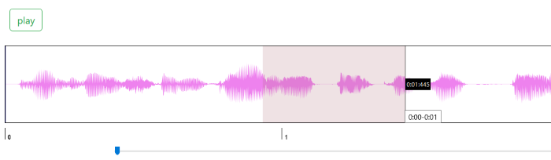
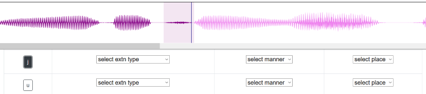
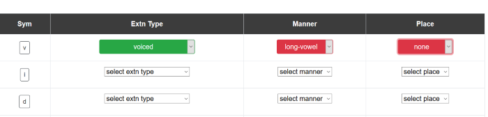

3. Drag sections in waveform box to create "Regions".

a. Click in the created region to play that particular part.
b. shift + click in case (a) does not work.
4.Click on each phoneme in Sym coloumn of the table and observe its respective region in the waveform box.
if the color of the region appears to be too light, click on the phenome again to change its color.
5.In order to play each phenome, click on its respective region which appears after clicking it.

6. Drag the slider to the right to ZOOM IN and observe the region properly.
7. Select the respective Extn type , Manner and Place of each phoneme.
8. The select box will turn into Green if right selection is made and Red if wrong selection is made.
